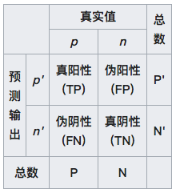
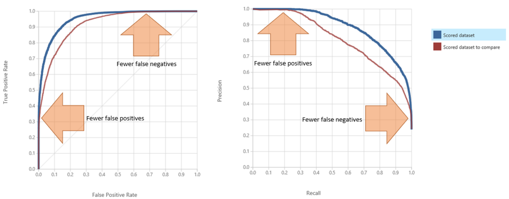
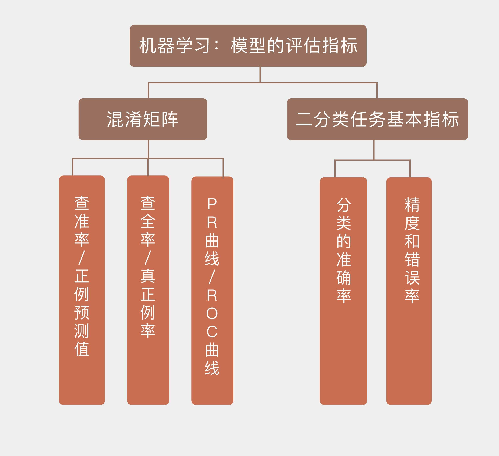

- 00 开篇词 打通修炼机器学习的任督二脉.md.html
- 01 频率视角下的机器学习.md.html
- 02 贝叶斯视角下的机器学习.md.html
- 03 学什么与怎么学.md.html
- 04 计算学习理论.md.html
- 05 模型的分类方式.md.html
- 06 模型的设计准则.md.html
- 07 模型的验证方法.md.html
- 08 模型的评估指标.md.html
- 09 实验设计.md.html
- 10 特征预处理.md.html
- 11 基础线性回归：一元与多元.md.html
- 12 正则化处理：收缩方法与边际化.md.html
- 13 线性降维：主成分的使用.md.html
- 14 非线性降维：流形学习.md.html
- 15 从回归到分类：联系函数与降维.md.html
- 16 建模非正态分布：广义线性模型.md.html
- 17 几何角度看分类：支持向量机.md.html
- 18 从全局到局部：核技巧.md.html
- 19 非参数化的局部模型：K近邻.md.html
- 20 基于距离的学习：聚类与度量学习.md.html
- 21 基函数扩展：属性的非线性化.md.html
- 22 自适应的基函数：神经网络.md.html
- 23 层次化的神经网络：深度学习.md.html
- 24 深度编解码：表示学习.md.html
- 25 基于特征的区域划分：树模型.md.html
- 26 集成化处理：Boosting与Bagging.md.html
- 27 万能模型：梯度提升与随机森林.md.html
- 28 最简单的概率图：朴素贝叶斯.md.html
- 29 有向图模型：贝叶斯网络.md.html
- 30 无向图模型：马尔可夫随机场.md.html
- 31 建模连续分布：高斯网络.md.html
- 32 从有限到无限：高斯过程.md.html
- 33 序列化建模：隐马尔可夫模型.md.html
- 34 连续序列化模型：线性动态系统.md.html
- 35 精确推断：变量消除及其拓展.md.html
- 36 确定近似推断：变分贝叶斯.md.html
- 37 随机近似推断：MCMC.md.html
- 38 完备数据下的参数学习：有向图与无向图.md.html
- 39 隐变量下的参数学习：EM方法与混合模型.md.html
- 40 结构学习：基于约束与基于评分.md.html
- 如何成为机器学习工程师？.md.html
- 总结课 机器学习的模型体系.md.html
- 总结课 贝叶斯学习的模型体系.md.html
- 结课 终有一天，你将为今天的付出骄傲.md.html
- 捐赠
08 模型的评估指标
用训练数据集拟合出备选模型的参数，再用验证数据集选出最优模型后，接下来就到了是骡子是马牵出来溜溜，也就是模型评估的阶段了。模型评估中使用的是测试数据集，通过衡量模型在从未出现过的数据上的性能来估计模型的泛化特性。为简便起见，我将以二分类任务为例来说明度量模型性能的不同指标。
二分类任务是最重要也最基础的机器学习任务，其最直观的性能度量指标就是分类的准确率。给定一组训练数据，算法不可能完全正确地划分所有实例，而是会将一部分正例误判为反例，也会将一部分反例误判为正例。分类正确的样本占样本总数的比例是精度（accuracy），分类错误的样本占样本总数的比例是错误率（error rate），两者之和等于1。
在现实生活中，二分类任务的一个实际应用就是疾病的诊断。你可以回忆一下在“贝叶斯视角下的机器学习”中提到的例子：“Jo去进行某种疾病的检查。已知检查的准确率是95%，也就是此病患者的检查结果95%会出现阳性，非此病患者的检查结果95%会出现阴性，同时在Jo的类似人群中，此病的发病率是1%。如果Jo的检查结果呈阳性，那么她患病的概率是多大呢？”
这个例子就是一个典型的二分类问题。根据之前的分析结果，即使Jo的检查结果呈现阳性，她患病的概率也只有16%，如果一个庸医完全按照检查结果判定的话，每6个病人里他就要误诊5个！（这又是频率主义直观的看法）但是需要注意的是，错误的分类不仅包括假阳性这一种情况，假阴性也要考虑在内——也就是确实生病的患者没有被检查出来的情形，假阳性和假阴性共同构成所有的误分类结果。
那么在Jo的例子中，出现假阴性的可能性有多大呢？同样令随机变量\(a\)表示Jo的真实健康状况，\(a = 1\)表示Jo生病，\(a = 0\)表示Jo没病；令随机变量\(b\)表示Jo的检查结果，\(b = 1\)表示阳性，\(b = 0\)表示阴性。由此可以计算出Jo的检查结果呈阴性，但是她患病的概率
\[p(a=1|b=0) = \\dfrac{p(b = 0|a=1) \\cdot p(a = 1)}{p(b = 0|a=1) \\cdot p(a = 1) + p(b = 0|a=0) \\cdot p(a = 0)}\]
$\(= \\dfrac{0.05 \\times 0.01}{0.05 \\times 0.01 + 0.95 \\times 0.99} = 0.053\\%\)$
可以看出，虽然这个检查容易把没病的人误诊成有病，但把有病的人误诊成没病的概率是极低的。这符合我们一贯的认知：在现实中，假阳性无非就是给患者带来一些不必要的精神压力，通常不会产生更加严重的后果；可假阴性却可能让患者错过最佳的治疗时机，一旦发现便为时已晚。因此，在医学检查中本着“宁可错判，不能放过”的原则，对假阴性的要求比对假阳性的要求更加严格。
不光是在医学中，在很多情况下将正例误判为反例和将反例误判为正例的代价都是不同的，这也是数理统计将分类错误分为一类错误和二类错误的原因。为了更清楚地体现出不同的错误类型的影响，机器学习采用了混淆矩阵（confusion matrix），也叫列联表（contingency table）来对不同的划分结果加以区分。

混淆矩阵（图片来自维基百科）
如上图所示，在混淆矩阵中，所有测试样例被分为真正例（true positive, TP）、假正例（false positive, FP）、假反例（false negative, FN）、真反例（true negative, TN）四大类。真正例和真反例容易理解，假正例指的是样例本身是反例而预测结果是正例，也就是假阳性；假反例指的是样例本身是正例而预测结果是反例，也就是假阴性。
这样的分类能够对机器学习模型的性能做出更加精细的刻画，查准率（precision）和查全率（recall）就是两个具体的刻画指标。
查准率\(P\)也叫正例预测值（positive predictive value），表示的是真正例占所有预测结果为正例的样例的比值，也就是模型预测结果的准确程度，写成数学表达式是
\[ P = PPV = \\dfrac{TP}{TP + FP} \]
查全率\(R\)也叫真正例率（true positive rate, TPR），表示的是真正例占所有真实情况为正例的样例的比值，也就是模型对真实正例的判断能力，写成数学表达式是
\[ R = TPR = \\dfrac{TP}{TP + FN} \]
通俗地说，查准率要求把尽可能少的真实负例判定为预测正例，查全率则要求把尽可能少的真实正例判定为预测负例。
一般情况下，查准率和查全率是鱼和熊掌不可兼得的一对指标。使用比较严苛的判定标准可以提高查准率，比如医学上对青光眼的诊断主要依赖于眼压值，将诊断阈值设定得较高可以保证所有被诊断的患者都是真正的病人，从而得到较高的查准率。可这样做会将症状不那么明显的初期患例都划分为正常范畴，从而导致查全率的大幅下降。
反过来，如果将眼压的诊断阈值设定得较低，稍有症状的患者都会被诊断为病人。这样做固然可以保证真正的病人都被确诊，使查全率接近于100%，但确诊的病例中也会包含大量的疑似患者，指标稍高的健康人也会被误诊为病人，从而导致查准率的大幅下降。
将查准率和查全率画在同一个平面直角坐标系内，得到的就是P-R曲线，它表示了模型可以同时达到的查准率和查全率。如果一个模型的P-R曲线能够完全包住另一个模型的曲线，就意味着前者全面地优于后者。可是更普遍的情况是有些模型查全性能较优，而另一些模型查准性能较优，这就需要根据任务本身的特点来加以选择了。
除了P-R曲线外，另一个对机器学习模型性能进行可视化的方式是受试者工作特征曲线（receiver operating characteristic curve），简称ROC曲线。ROC这个名字来源于曲线的原始用途：判断雷达接收到的信号到底是敌机还是干扰。在机器学习中，这样的场景就演化为所有的样例共同符合一个混合分布，这个混合分布由正例和反例各自服从的单独概率分布叠加组成。此时二分类模型的任务就是确定新来的样本究竟来源于哪个分布。数据中的随机变化在分类器中体现为阈值动态取值的随机变化，分类器的性能则取决于两个概率分布之间的分离程度。
ROC曲线描述的是真正例率和假正例率之间的关系，也就是收益（真正例）与代价（假正例）之间的关系。所谓的假正例率（false positive rate, FPR）等于假正例和所有真实反例之间的比值，其数学表达式为
\[ FPR = \\dfrac{FP}{FP + TN} \]
ROC空间将FPR定义为\(X\)轴，TPR定义为\(Y\)轴。给定一个二元分类模型和它的阈值，就能计算出模型的FPR和TPR，并映射成由(0, 0)、(0, 1)、(1, 0)、(1, 1)四个点围成的正方形里。在这个正方形里，从(0, 0)到(1, 1)的对角线代表了一条分界线，叫作无识别率线，它将ROC空间划分为左上／右下两个区域。
无识别率线描述的是随机猜测的模型，以0.5的概率将新来的实例判定为正例，这种模型的TPR和FPR是处处相等的。在无识别率线左上方，所有点的TPR都大于FPR，意味着分类结果优于二选一的随机猜测；而在无识别率线右下方，所有点的TPR都小于FPR，意味着分类结果劣于随机猜测。完美的模型体现在ROC空间上的(0, 1)点：\(FPR = 0\)意味着没有假正例，没有负例被掺入；\(TPR = 1\) 意味着没有假负例，没有正例被遗漏。也就是说，不管分类器输出结果是正例还是反例，都是100%完全正确。
不同类型的模型具有不同的ROC曲线。决策树这类模型会直接输出样例对应的类别，也就是硬分类结果，其ROC曲线就退化为ROC空间上的单个点。相比之下，朴素贝叶斯这类输出软分类结果，也就是属于每个类别概率的模型就没有这么简单了。将软分类概率转换成硬分类结果需要选择合适的阈值，每个不同的阈值都对应着ROC空间上的一个点，因此整个模型的性能就是由多个离散点连成的折线。下图给出了ROC曲线和P-R曲线的示意图，你可以直观感受一下两者的区别。

典型的ROC曲线（左）与P-R曲线（右）
ROC曲线可以用来衡量习得模型的性能。模型的ROC曲线越靠近左上方，其性能就越好。和P-R曲线一样，如果一个模型的ROC曲线能够完全包住另一个模型的曲线，那么前者的性能就优于后者。但大多数情况下，模型之间并不存在全方位的碾压性优势，自然不会出现ROC曲线完全包含的情形。这时要评估不同模型性能的话，就需要ROC曲线下面积的概念。
ROC曲线下面积（Area Under ROC Curve）简称AUC。由于AUC的计算是在\(1 \\times 1\)的方格里求面积，因此其取值必然在0到1之间。对于完全靠蒙的无识别率线来说，其AUC等于0.5，这样的模型完全没有预测价值。一般来说，通过调整模型的阈值，可以让模型的最优AUC大于0.5，达到比随机猜测更好的判别效果。如果模型的AUC比0.5还小，这样的模型可以通过求解其镜像，也就是将分类结果反转来获得优于随机猜测的结果。
但ROC曲线的意义不仅限于求解面积，它还可以提供其他的信息。不同性能的算法对应着ROC空间上不同的点，如果能够确定所有样例中真实正例的比例\(pos\)和真实负例的比例\(1 - pos\)，那么模型的精度就可以表示为\(pos \\cdot TPR + (1 - pos) \\cdot (1 - FPR)\)。根据这个数量关系可以得出，虽然不同的模型具有不同的\(TPR\)和\(FPR\)，但它们的精度是可以相等的。在ROC空间上，这些精度相同的模型都落在同一条斜率为\((1 - pos) / pos\)，也就是负例与正例比值的直线上，这样的直线就被称为等精度线（iso-accuracy lines）。
由此，正例和负例的比例就可以作为已知的先验信息指导模型的选择。如果正例和负例的比例约为2:1，那就可以在ROC空间上作一条斜率为1/2且经过(0, 1)的直线，并向右下方平行移动。当平移的直线与ROC曲线相交时，交点所对应的模型就是适用于这个先验信息的最优模型。此时最优模型的精度是多少呢？就是交点所在直线的截距，也就是和\(TPR\)轴的交点。
今天我和你分享了对机器学习模型不同的性能度量方法，其要点如下：
在二分类任务中，模型性能度量的基本指标是精度和错误率，两者之和为1；
混淆矩阵是个\(2 \\times 2\)的性能度量矩阵，其元素分别是真正例、假正例、假反例和真反例的数目；
P-R曲线表示的是查准率和查全率之间的关系，曲线在点(1, 1)上达到最优性能；
ROC曲线表示的是真正例率和假正例率之间的关系，曲线在点(0, 1)上达到最优性能。
关于模型性能的评估我想给你推荐一位学者，他就是英国布里斯托尔大学的彼得·弗拉克（Peter Flach）。这位教授在模型评估研究，尤其是ROC曲线分析上的造诣颇深，你可以在他的著作《机器学习》（Machine Learning）第2章和论文中领会模型评估中蕴藏的信息，这一定会让你受益匪浅。
对比P-R图和ROC曲线会发现一个有趣的现象，那就是当类别的平衡性，也就是数据中正例和负例的比例发生改变时，这种变化不会给ROC曲线带来变化，却会让P-R曲线产生明显的改变，为什么会出现这种现象呢？
你可以思考一下，并在这里分享你的观点。

© 2019 - 2023 Liangliang Lee. Powered by gin and hexo-theme-book.